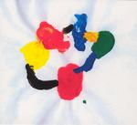

| Artist: | Mir-0 |
| Title: | Shhh |
| Label: | Boxco CO-0205 |
| Length(s): | 64 minutes |
| Year(s) of release: | 2005 |
| Month of review: | [06/2006] |
| 1) | Aluks | 2.39 |
| 2) | Liplu | 7.14 |
| 3) | Balaf | 8.06 |
| 4) | Shiu | 6.29 |
| 5) | Trööt | 8.56 |
| 6) | Yszöh | 10.04 |
| 7) | Kakekria | 10.36 |
| 8) | ?? | 10.25 |
On Balaf (one wonders what these titels refer to; they aren't Finnish, at least not overtly so. The Spanish guitar is the dominant element here, with the percussion giving a sense of urgency somewhat in the back. The music slowly powers up, forcefully because of the repetition, with feedback entering the picture halfway. Paranoise comes to mind here, although there no vocals and samples.
Shiu is back to relative quiet, and I must say that this sounds a lot like samples and synths I hear, so I wonder how he obtained these sounds. Bells, and percussion are dominant here, and the feel reminds of Indonesian gamelan.
Trööt is one of the more urgent pieces. There is something of the likes of Kraftwerk, Neu! and La Dusseldorf in here, mainly because of this percussively inspired urgency, a kind of drone. The middle and final part is psychedelic, sounding quite a bit like the Ozrics.
Yszöh is all percussion and acoustics again. I am reminded of Gandalf's More Than Just A Seagull here. Notwithstanding the music powers up a bit, moving back into the psychedelic realm again, and it does so well and forcefully. Nowhere can I hear that this is only one guy playing, except maybe that he really never rocks (but I think this might not be inability). The final part is quite chaotic with all kinds of effects, many of them seemingly coming from violin with an added sharpness to them.
According to the digipack, Kakekria is the final song. We open with swirly acoustic guitar like material and sound effects that I again wonder about where they originate from. The music is more atmosphere than actual melody. It stays relatively relaxed, although bouncy percussion does come in halfway. Then the music again has a krautrock feel but with a world music influence. It is more relaxed.
The last track on the album is not mentioned on the digipack, and indeed there isn't any music or sound there.